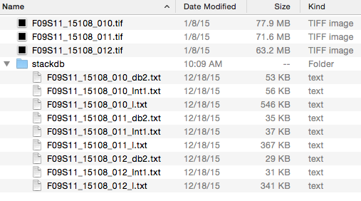
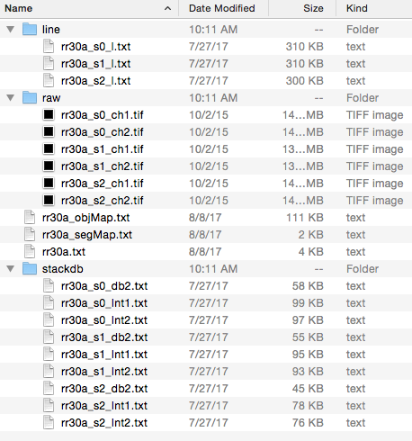

File format
Map Manager saves all stack and time-series map files as plain text files. In this way, annotations created in Map Manager can easily be opened in a wide range of other programming environments for additional visualization and analysis.
As an example of this, we have created a Python package PyMapManager.
Please note, Map Manager never modifies raw .tif files, it only makes copies (in the case of a map).

Single time-point files
- The original .tif file is never modified
- Annotations are saved in a stackdb folder
- db2
- int1
- int2
- line
stackdb
int1 and int2
line

Map files
- Maps are saved in a folder whose name is the same as the map name
- At the root of this folder are three map files
- map. see format
- object map
- segment map (if there are segment)
- There are some folders
- line
- raw: The original .tif files are never modified, these are direct copies.
- stackdb
map
object map
segment map
stack db
line
PyMapManager package
Map Manager saves files as plain text. Thus, it is relatively easy to extend the function of Map Manager by writing Python (or Matlab) code to load, parse, and analyze these text files. This is a very rapid and effective route to extending the functions of Map Manager with new analysis particular to your own data and ideas.
- PyMapManager on GitHub
- PyMapManager API documentation
- IPython notebook examples
If you are on a Mac, python comes pre-installed and you are good to go. In general, Anaconda is a useful starting point as it pre-installes most Python packages you might need. Download Anaconda here.
[FUTURE] HDF5
HDF5 is an open source cross platform binary file format. It can be read from Matlab, Python, Igor Pro and from a command line.
Out of the box, Map Manager is not saving files in the HDF5 format. If you are interested in turning on this feature, please email Robert Cudmore.
Each file has the following format
Map file format
| index | 0 | 1 | 2 | 3 | 4 | 5 | 6 | 7 | 8 |
|---|---|---|---|---|---|---|---|---|---|
| hsType | mm3 | mm3 | mm3 | mm3 | mm3 | mm3 | mm3 | mm3 | mm3 |
| hsStack | rr30a_s0 | rr30a_s1 | rr30a_s2 | rr30a_s3 | rr30a_s4 | rr30a_s5 | rr30a_s6 | rr30a_s7 | rr30a_s8 |
| hsdb | rr30a_s0_db2 | rr30a_s1_db2 | rr30a_s2_db2 | rr30a_s3_db2 | rr30a_s4_db2 | rr30a_s5_db2 | rr30a_s6_db2 | rr30a_s7_db2 | rr30a_s8_db2 |
| hsStackNV | rr30a_s0 | rr30a_s1 | rr30a_s2 | rr30a_s3 | rr30a_s4 | rr30a_s5 | rr30a_s6 | rr30a_s7 | rr30a_s8 |
| date | 20141009 | 20141013 | 20141016 | 20141017 | 20141018 | 20141020 | 20141021 | 20141022 | 20141029 |
| time | 20:01:40 | 22:24:04 | 19:49:05 | 20:30:39 | 16:18:59 | 19:25:41 | 18:36:19 | 19:47:00 | 19:05:27 |
| hsStackSeconds | 3495729700 | 3496083844 | 3496333745 | 3496422639 | 3496493939 | 3496677941 | 3496761379 | 3496852020 | 3497454327 |
| fiducPnt | 0 | 0 | 0 | 0 | 0 | 0 | 0 | 0 | 0 |
| numChannels | 2 | 2 | 2 | 2 | 2 | 2 | 2 | 2 | 2 |
| defaultChannel | 2 | 2 | 2 | 2 | 2 | 2 | 2 | 2 | 2 |
| px | 1024 | 1024 | 1024 | 1024 | 1024 | 1024 | 1024 | 1024 | 1024 |
| py | 1024 | 1024 | 1024 | 1024 | 1024 | 1024 | 1024 | 1024 | 1024 |
| pz | 70 | 65 | 70 | 70 | 70 | 80 | 70 | 80 | 70 |
| dx | 0.12 | 0.12 | 0.12 | 0.12 | 0.12 | 0.12 | 0.12 | 0.12 | 0.12 |
| dy | 0.12 | 0.12 | 0.12 | 0.12 | 0.12 | 0.12 | 0.12 | 0.12 | 0.12 |
| dz | 1 | 1 | 1 | 1 | 1 | 1 | 1 | 1 | 1 |
| stackdbVersion | 20151224 | ||||||||
| numSeg | 5 | ||||||||
| numObj | 2467 | ||||||||
| numSpine | 1227 | ||||||||
| importedStackName | RR30a_S0 | RR30a_S1 | RR30a_S2 | RR30a_S3 | RR30a_S4 | RR30a_S5 | RR30a_S6 | RR30a_S7 | RR30a_S8 |
| condStr | a1 | a2 | e | b1 | b2 | b | c1 | c2 | c3 |
| zeroSession | 0 | ||||||||
| sessions | 0 | 1 | 2 | 3 | 4 | 5 | 6 | 7 | 8 |
| datetime | 3495729700 | 3496083844 | 3496333745 | 3496422639 | 3496493939 | 3496677941 | 3496761379 | 3496852020 | 3497454327 |
| days | 0 | 4.0989 | 6.9913 | 8.0201 | 8.8454 | 10.975 | 11.941 | 12.99 | 19.961 |
| hours | 0 | 98.373 | 167.79 | 192.48 | 212.29 | 263.4 | 286.58 | 311.76 | 479.06 |
| zsessions | 0 | 1 | 2 | 3 | 4 | 5 | 6 | 7 | 8 |
| zdays | 0 | 4.0989 | 6.9913 | 8.0201 | 8.8454 | 10.975 | 11.941 | 12.99 | 19.961 |
| zhours | 0 | 98.373 | 167.79 | 192.48 | 212.29 | 263.4 | 286.58 | 311.76 | 479.06 |
| mapCond | mc1 |